v6 실제 앱 화면v6 실제 앱 화면
Pixel 8 · Android 16(API 36) 에뮬레이터에서 Flutter 화면을 직접 렌더링한 캡처입니다. 책·요약·퀴즈 데이터는 검증용 가짜 응답을 사용했습니다. 이미지 선택과 OCR·요약 생성의 진행 상태도 같은 화면에서 검증했습니다. 이미지를 선택하면 원본 크기로 열립니다.
디자인·화면 흐름 기준 · UX 검토·검증 기록
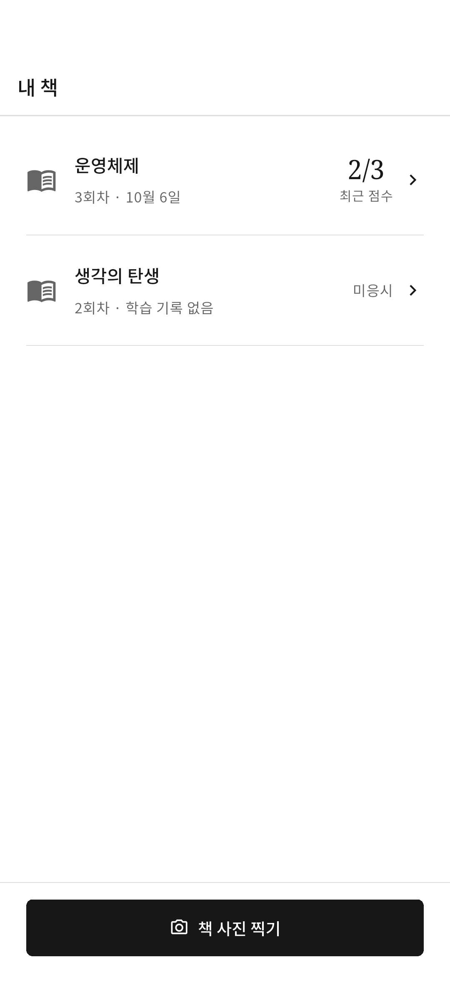
내 책 · 밝은 모드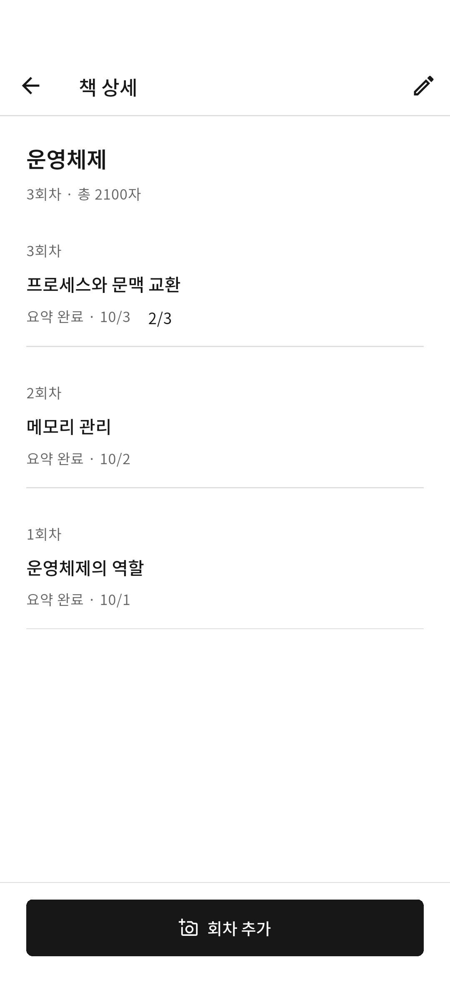
회차 목록 · 밝은 모드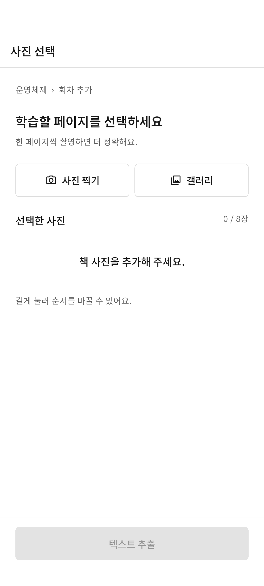
사진 선택 · 밝은 모드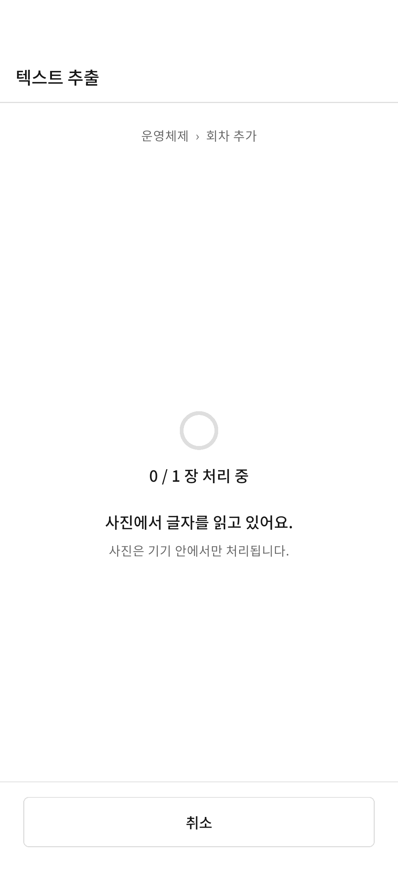
기기 OCR 진행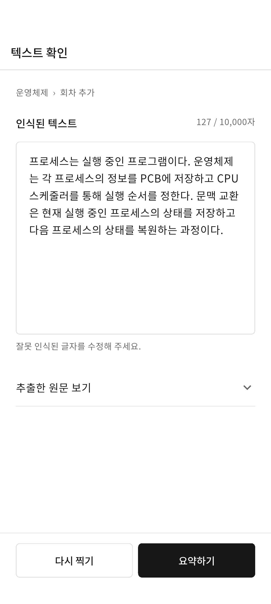
텍스트 확인·수정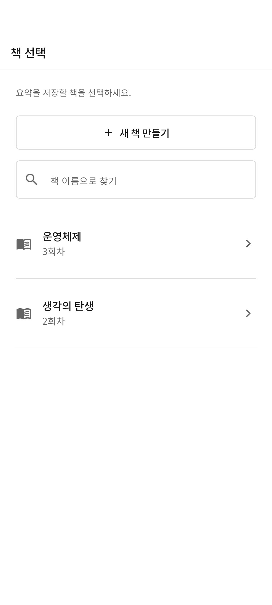
저장할 책 선택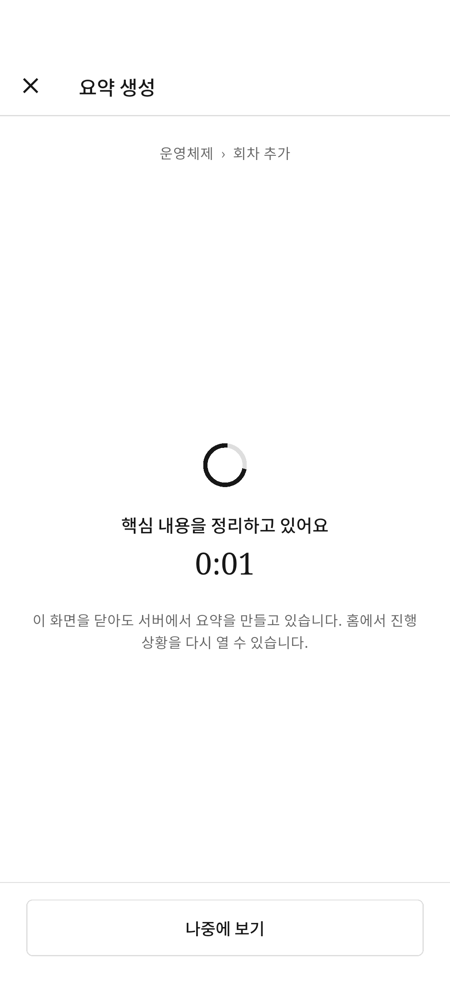
요약 생성 대기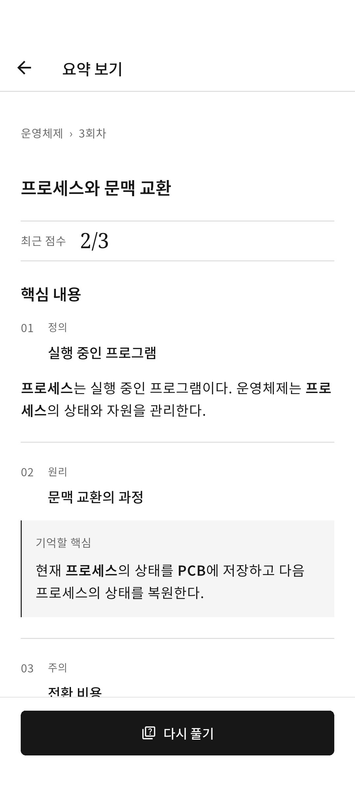
요약·핵심 용어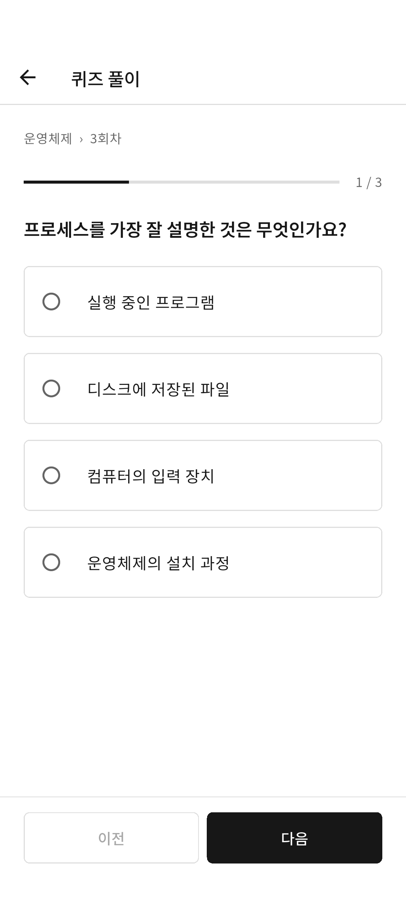
퀴즈 풀이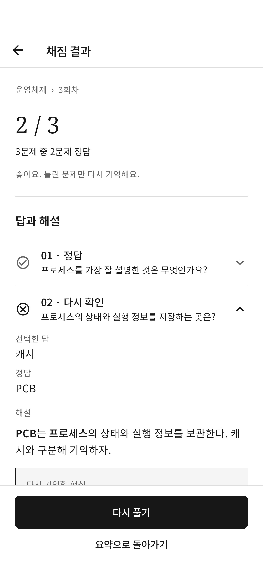
채점·오답 복습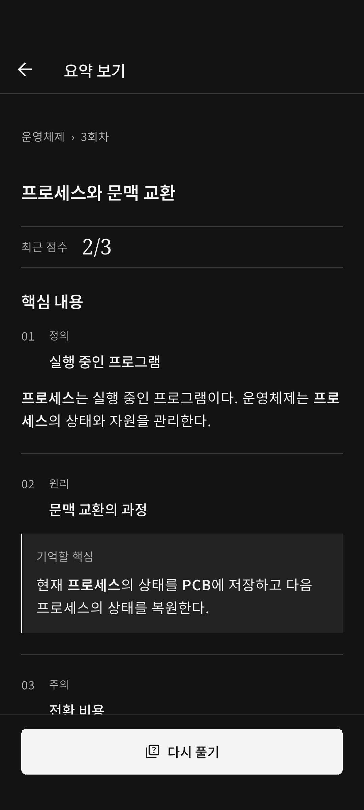
요약 · 다크 모드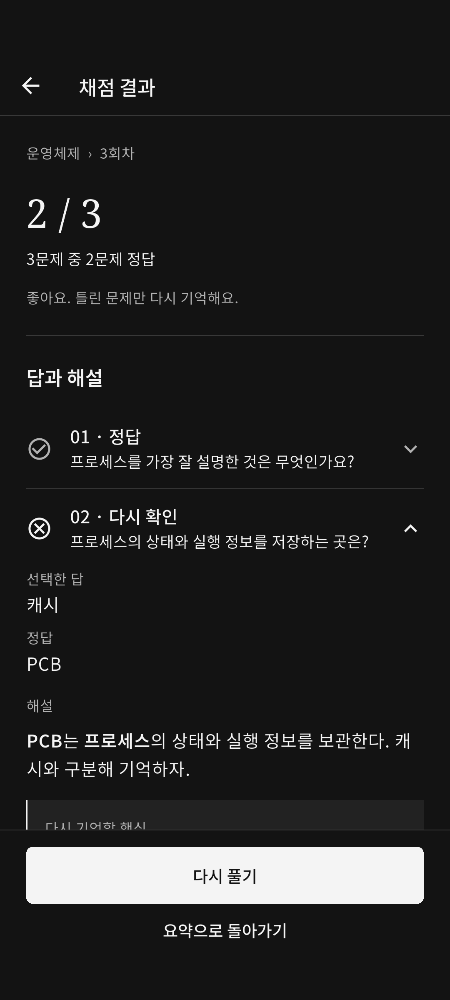
채점 · 다크 모드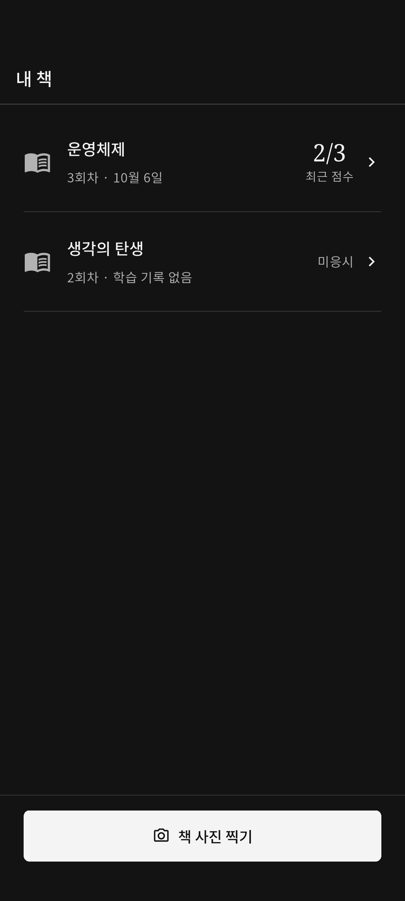
내 책 · 다크 모드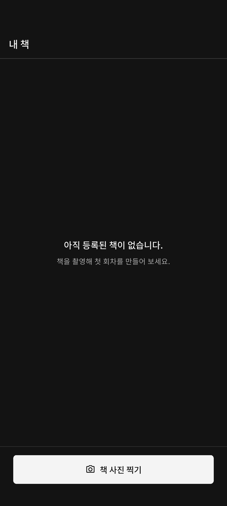
등록된 책 없음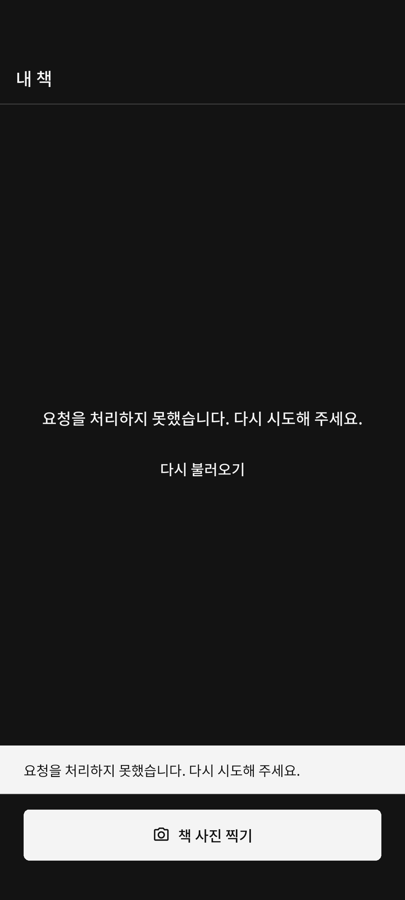
목록 조회 오류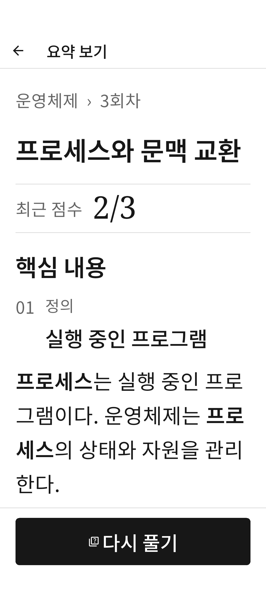
요약 · 글자 200%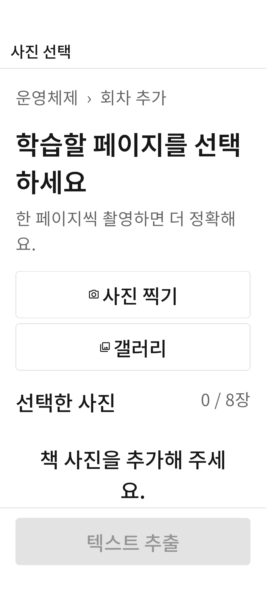
사진 선택 · 글자 200%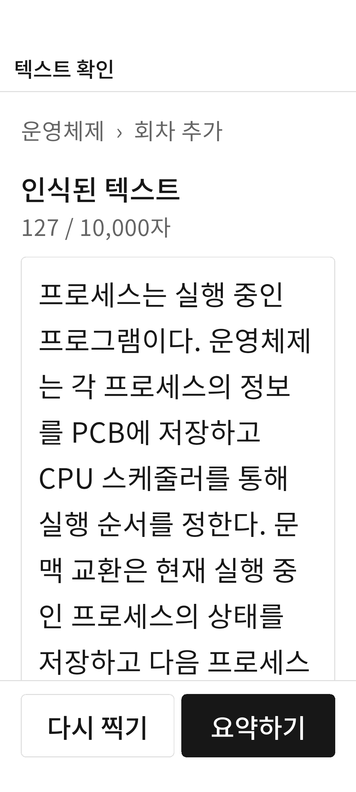
텍스트 확인 · 글자 200%